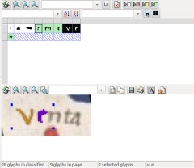

Toponym Identification on Scanned Old Maps
This page showcases some experimental work on the automatic identification of toponyms on scanned old maps using Open Source software. Fully automatic detection and transcription of place names is, arguably, not achievable with today's technology. Therefore, our goal is to devise semi-automated methods which eliminate as much as possible of the tedious manual effort that is required to annotate map scans.
This work is in its earliest stages & we have no offical project set up around this yet. So bear with us regarding the bare-bone state of this site! (Many thanks go out to our intern Peter, for taming OpenCV and devising increasingly clever image filtering methods!)
Automatic Toponym Detection
The first challenge is to identify where on the map place names are located. We are experimenting with image processing techniques (using the Open Source OpenCV toolkit) and different types of maps. Examples are below.

Ptolemaic Map Of The British Isles, Ca. 1480,
© The British Library Board.
Harley MS 7182 ff.. 60v-61.
(The full hi-res image is £10+vat from imagesonline@bl.uk)

Salvator Oliva, Mediterranean. HM 2515. PORTOLAN ATLAS. Marseilles, 1619.
Source: Wikimedia Commons
{kind=link}

Josephinische Landesaufnahme: Gebiet von Mooskirchen bis Grazer Feld, Steiermark, Österreich, 1764-1787.
Source:
Wikimedia
Commons
{kind=link}
Automatic Toponym Transcription
{kind=link}
Once we have identified candidates that may be place names, we need to transcribe them. Automating the transcription is the most challenging step in the process. We are currently experimenting with the document analysis framework Gamera to get a feel for what can be achieved with state of the art tools. Additionally, we aim to exploit the layout of identified candidates to deduce possible place names based on existing toponym lists: e.g. in the case of portolan charts, toponyms are arranged in sequence along the coastline. This sequential ordering may potentially allow for some degree of "interpolation" of unidentified names.
Manual Annotation
For most old maps, machines still fail miserably in map transcription tasks. Humans, on the other hand, can read and transcribe place name labels with relative (depending on the type of map) ease. However, the sheer magnitude of the task makes it challenging to deal with: map collections often host 1.000s of maps, each potentially containing 100s of place names. Our goal is to build tools that allow human users to perform selection, transcription, and annotation tasks as efficiently as possible, or to quickly validate and correct automatically generated results.
Annotated Maps: Use Cases
Once a map's place names are annotated, there are plenty of benefits. Enhanced search & linking with a historic Gazetteer are likely the most important ones. But there are also more playful, casual use cases:
- Map re-labelling. Using toponym detection and a technique called inpainting, we can replace the original labels for better readability, or to "translate" them to their modern-day counterparts. See a demo.
- ...